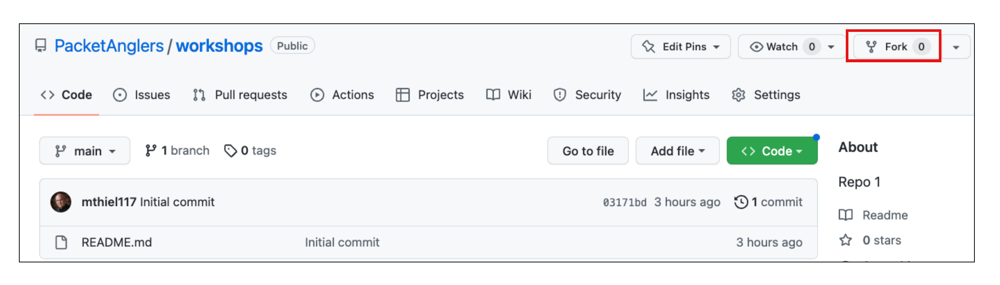
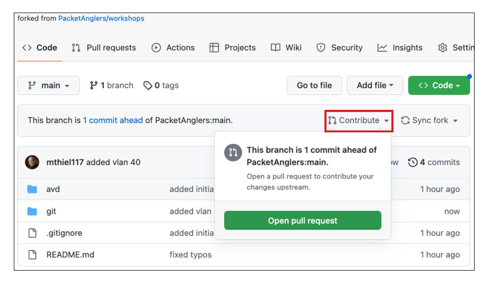
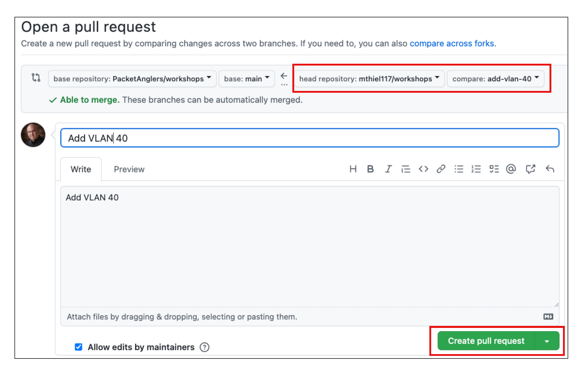

Getting started with Git¶


Introduction¶
In this section we will explore a brief introduction of Git. We will cover the installation and basic commands used with Git. Git is the most commonly used version control system. Git tracks changes to files allowing you to revert to specific versions. File changes are tracked by storing snapshots (commits) of the files over time. In the image below, the content of files A, B, and C change over time. Git allows you to roll back to any previous commit.
{kind=link}
Git makes collaboration effortless by allowing multiple people to merge their changes into one source. Regardless of whether you work solo or as part of a team, Git will be useful for you.
Basic Git commands we will be working with:
- git config
- git status
- git init
- git add
- git commit
- git log
- git branch
- git clone
- git merge
- git switch
- git diff
- git restore
Installation & setup¶
Installation¶
Note
Git has been pre-installed in your ATD Lab environment. If you need to install and configure Git on another system, follow the instructions at the links above.
Download Git - https://git-scm.com/downloads
Configuration - https://git-scm.com/book/en/v2/Getting-Started-Installing-Git
Setup¶
When setting up Git for the first time you need to configure your Identity with a name and email address. This is used to add your signature to commits. Additionally, set the default branch name to main.
From the Terminal in your ATD Lab Programmability IDE running the following commands.
# Set your username:
git config --global user.name "FirstName LastName"
# Set your email address:
git config --global user.email "name@example.com"
# Set default branch name to `main`
git config --global init.defaultBranch main
Programmability IDE (VS Code)¶
{kind=link}
Verify your configuration:
Download Sample Files¶
We have provided some sample configuration files to begin working with Git. From the Programmability IDE, run the following 2 commands to download sample files and change your working directory.
bash -c "$(curl http://www.packetanglers.com/get-sample-files.sh)"
cd /home/coder/project/labfiles/samplefiles
Git¶
Git - command line basics¶
Initialize directory as a Git repository¶
Next we initialize the current directory /home/coder/project/labfiles/samplefiles/ as a repository (repo).
Notice your CLI prompt changed.
The directory is now initialized as a Git repository and the following hidden sub-directory /home/coder/project/labfiles/samplefiles/.git/ was created. It holds version control information for your repository.
Congratulations!!! You have created your first repository.
Git Repository Status¶
Check the current status of your repo.
Since this is a brand new repo you should see output similar to the following, indicating there are untracked files.
On branch main
No commits yet
Untracked files:
(use "git add <file>..." to include in what will be committed)
leaf1.cfg
leaf2.cfg
leaf3.cfg
leaf4.cfg
spine1.cfg
spine2.cfg
nothing added to commit but untracked files present (use "git add" to track)
Stage your changes¶
When you want to track files, you first need to stage them. The above output gives you a clue as to the command needed to stage the changes. You can specify individual files or add all files with a wildcard period .
To stage all file changes:
Then check the status again to see what is staged and ready to be committed.
Output:
On branch main
No commits yet
Changes to be committed:
(use "git rm --cached <file>..." to unstage)
new file: leaf1.cfg
new file: leaf2.cfg
new file: leaf3.cfg
new file: leaf4.cfg
new file: spine1.cfg
new file: spine2.cfg
Now all of the files are staged and ready to be committed to the main branch.
Commit your changes¶
Now you can commit your staged changes with a comment:
Note
Use a comment that will reflect the changes made so you can reference back to this commit in the future. Commit messages will show up in the log.
Output:
[main (root-commit) 45eeb6d] Initial Commit
6 files changed, 832 insertions(+)
create mode 100644 leaf1.cfg
create mode 100644 leaf2.cfg
create mode 100644 leaf3.cfg
create mode 100644 leaf4.cfg
create mode 100644 spine1.cfg
create mode 100644 spine2.cfg
Now these files are committed to your local repository.
Check status one more time.
You have successfully made your first historical marker in your repo. Check the log to see what is there.
Note
Press q to quit from viewing the log.
Create a branch¶
Creating a branch allows you to make a new copy of your files without affecting the files in the main branch. For example, if you wanted to update the hostnames on your switches, you might create a new branch called update-hostnames.
{kind=link}
Verify the current branch:
Create a new branch:
Switch to this new branch:
Using the IDE, open each switch config file and update the hostname. Changes are auto-saved. Let's verify the changes (diffs) we are about to commit to make sure they are correct.
Now, stage and commit the changes to the new branch update-hostnames.
Merge branch¶
Now that we are satisfied with our hostnames changes we can merge branch update-hostnames into main.
First, switch back to the main branch and notice the hostnames go back to the original name. Why did that happen? Remember we never modified the original copy main branch. This is a different version of the file. Once we merge the update-hostnames branch into main, then both copies will be the same.
Execute the merge operation:
Verify the updated hostnames in each file.
Now that your changes are merged, you can safely delete the update-hostnames branch.
GitHub¶


Before proceeding further, make sure you are logged into your active GitHub account.
If you do not have a GitHub account, you can create one here.
Note
In the ATD Lab, you will authenticate to GitHub using an 8 digit access code. On other systems you will need a Personal Access Token. You may skip the next step if you are working in the ATD Lab IDE. Detailed instructions for creating a Personal Access Token can be found here.
Create a GitHub personal access token¶
To push your local repo to GitHUb you will need a Personal Access Token. From your GitHub account, click through the following path to generate a new personal access token. Profile → Settings → Developer Settings → Personal Access Tokens → Tokens (classic) → Generate new token (classic)
- Give the token a meaningful name by setting the Note:
MyNewToken - Set the Expiration: 30 days (default)
Select the scopes to grant to this token. To use your token to access repositories from the command line, select repo. A token with no assigned scopes can only access public information.
The click Generate token at the bottom of the page. Copy and save the token in a secure place. YOU WILL NOT BE ABLE TO SEE THE TOKEN AGAIN.
{kind=link}
Fork a repository¶
A fork is a copy of another repository that you can manage. Forks let you make changes to a project without affecting the original repository. You can fetch updates from or submit changes to the original repository with a pull request.
Fork the example repository to make your own copy. Then you can modify your copy of the original repository.
Steps to Fork the example repository¶
- From GitHub.com, navigate to the Packet Anglers workshop repository.
- In the top-right corner of the page, click Fork.

- Select an owner.
- Set repository name. By default, forks are named the same as their upstream repository.
- Optionally, add a description of your fork.
- Click
Create forkbutton at the bottom
{kind=link}
Next up... Clone this forked repository to your local host machine.
Clone forked repo to local host¶
Cloning a repository allows us to make a local copy of a project that resides on GitHub. In the previous step, you forked a repository to your local GitHub account. Navigate to your forked repo in GitHub. From there, click on the green code button and copy the URL of the forked repository.
{kind=link}
Clone this repository into the current directory of your local machine. In the ATD Lab your current directory needs to be /home/coder/project/labfiles/.
cd /home/coder/project/labfiles
# replace this URL with your forked repo
git clone https://github.com/xxxxxxx/workshops.git
Now change into the new cloned directory.
Verify where the remote copy of this clones lives.
In the next step, let's add a new VLAN 40 to the atd/vlans.yml file. First we should create a new branch.
Create the branch¶
Now update vlans.yml with VLAN 40 information.
Additionally, stage and commit these changes to the new branch.
Push Changes to GitHub¶
Now push the updated branch to your remote fork on GitHub.
Note
You will be prompted to authenticate to GitHub if this is the first time you are pushing from the Lab environment. Follow along the Copy & Continue to GitHub prompts by entering the 8 digit authentication code. Additional pushes to GitHub will cache your credentials.
Once authenticated your new branch and updated file will exist on GitHub.
Output:
Enumerating objects: 7, done.
Counting objects: 100% (7/7), done.
Delta compression using up to 16 threads
Compressing objects: 100% (3/3), done.
Writing objects: 100% (4/4), 335 bytes | 335.00 KiB/s, done.
Total 4 (delta 2), reused 0 (delta 0), pack-reused 0
remote: Resolving deltas: 100% (2/2), completed with 2 local objects.
remote:
remote: Create a pull request for 'add-vlan-40' on GitHub by visiting:
remote: https://github.com/wildthing/workshops/pull/new/add-vlan-40
remote:
To https://github.com/wildthing/workshops.git
* [new branch] add-vlan-40 -> add-vlan-40
Branch 'add-vlan-40' set up to track remote branch 'add-vlan-40' from 'origin'.
You should now see the new branch add-vlan-40 and commit messages in GitHub.
The next step is to merge the add-vlan-40 branch into the main branch. A Pull Request is used to do this.
Pull request¶
A Pull Request in Git allows a contributor (you) to ask a maintainer (owner) of origin repository to review code changes you wish to merge into a project. Once a pull request is opened, you can discuss and review the potential changes with collaborators and add follow-up commits before your changes are merged into the main branch.
Once all changes have been agreed upon, the maintainer of the original repo will merge your changes. At this point, your code changes are visible in the origin project repo.
Steps to initiate a Pull Request¶
- On GitHub.com, navigate to the main page of the repository.
- In the "Branch" menu, choose the branch that contains your commits.
- Above the list of files, click the Contribute drop-down and click Open pull request.

- Use the base branch dropdown menu to select the branch you'd like to merge your changes into, then use the compare branch drop-down menu to choose the topic branch you made your changes in.

- Type a title and description for your pull request.
- To create a pull request that is ready for review, click Create Pull Request. To create a draft pull request, use the drop-down and select Create Draft Pull Request, then click Draft Pull Request.
{kind=link}
{kind=link}
This will generate a Pull Request on the main project repository. The owner/maintainer can then merge the pull request once all changes are satisfied.
Cleanup¶
After your Pull Request is merged, there are some additional steps you may want to do.
- Delete your branch on GitHub and your local host.
- Sync your Forked repo (below)
- Pull the updates into
mainbranch on your local host.git pull
{kind=link}